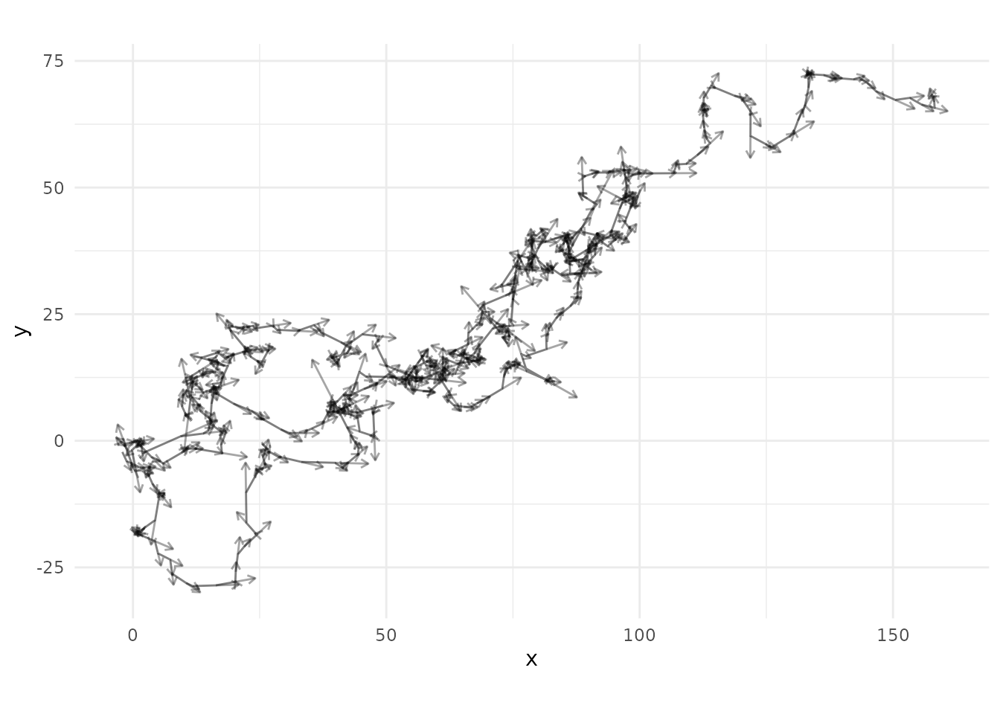
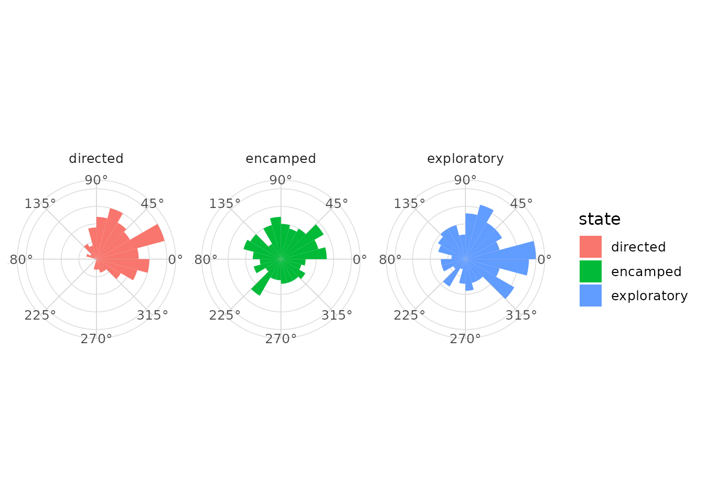
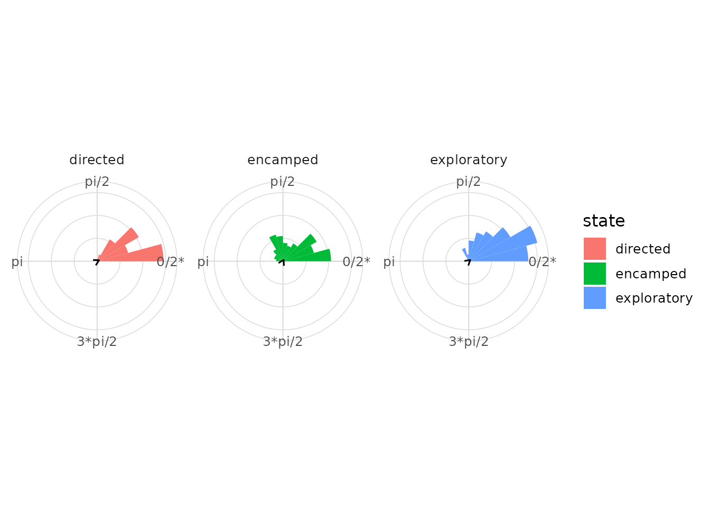
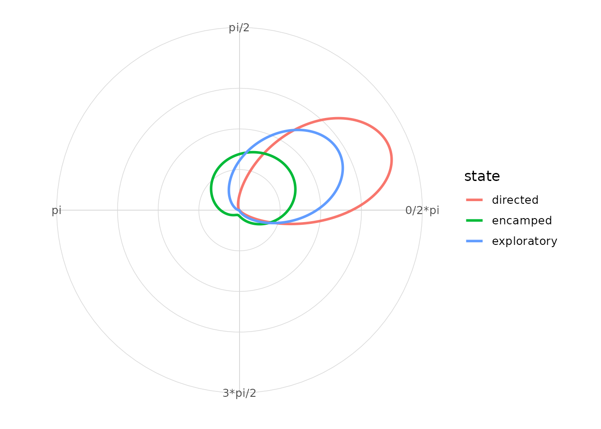

Tracks and directions
Trajectories produce step lengths, bearings and turn angles. These quantities are natural inputs for circular graphics.
Coordinates, steps, bearings and turns
raw_tracks <- animal_steps |>
select(id, time, x, y)
steps <- raw_tracks |>
mutate_directional_features(x = x, y = y, id = id, time = time)Visualize a trajectory
ggplot(animal_steps, aes(x = x, y = y, group = id)) +
geom_path(alpha = 0.5) +
geom_direction_arrow(aes(angle = bearing, length = step_length), alpha = 0.35) +
coord_equal() +
theme_minimal()
#> Warning: Removed 3 rows containing non-finite outside the scale range
#> (`stat_direction_arrow()`).
Bearings by state
ggplot(animal_steps, aes(x = bearing, fill = state)) +
geom_rose(bins = 24) +
facet_wrap(~ state) +
scale_x_circular_degrees() +
coord_circular() +
theme_circular()
#> Warning: Removed 3 rows containing non-finite outside the scale range
#> (`stat_rose()`).
Turn angles by state
ggplot(animal_steps, aes(x = turn_angle, fill = state)) +
geom_rose(bins = 24) +
geom_mean_direction() +
facet_wrap(~ state) +
scale_x_circular_radians() +
coord_circular() +
theme_circular()
#> Warning: Removed 280 rows containing non-finite outside the scale range
#> (`stat_rose()`).
#> Warning: Removed 280 rows containing non-finite outside the scale range
#> (`stat_mean_direction()`).
Comparison by state
ggplot(animal_steps, aes(x = turn_angle, colour = state)) +
geom_circular_density(linewidth = 1) +
scale_x_circular_radians() +
coord_circular() +
theme_circular()
#> Warning: Removed 280 rows containing non-finite outside the scale range
#> (`stat_circular_density()`).